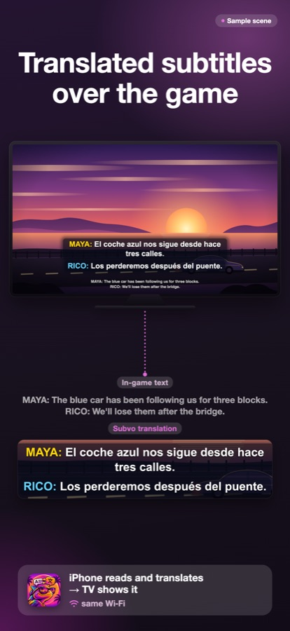
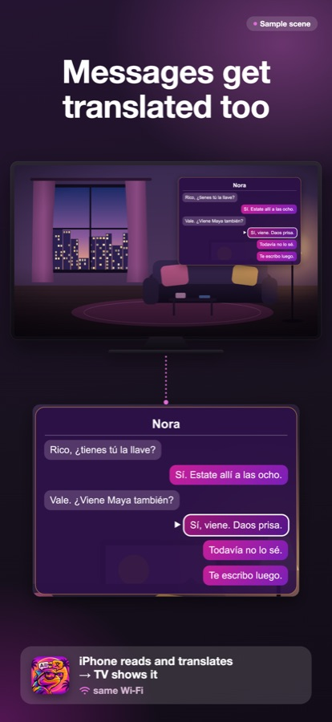
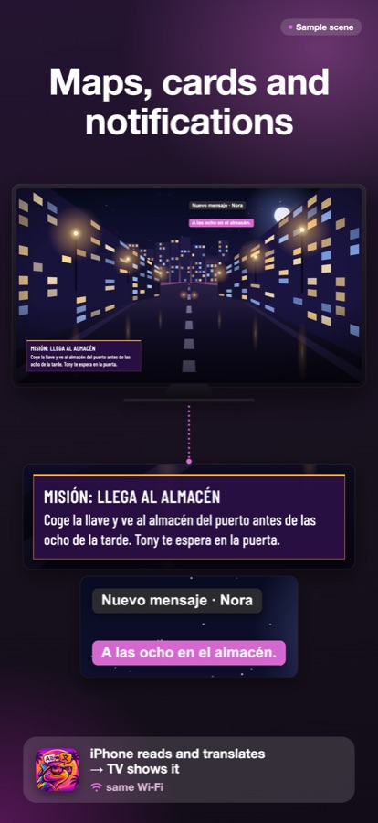
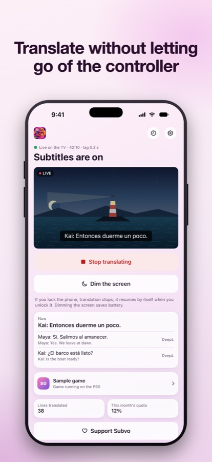
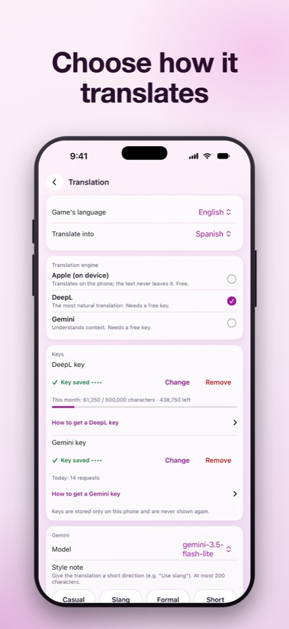
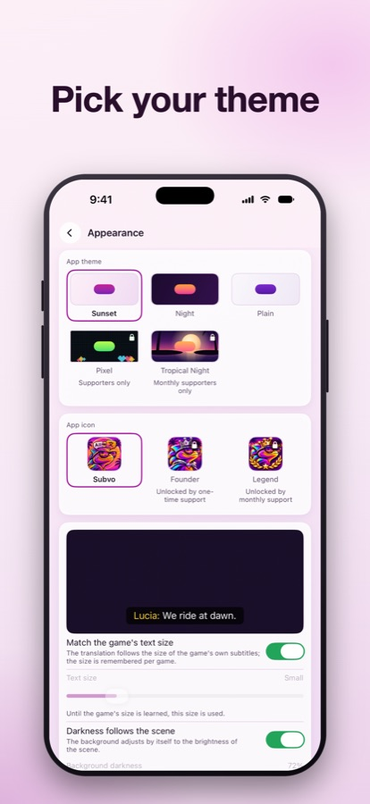

Subvo
Subvoنصّ اللعبة على التلفاز بلغتك.
يقرأ Subvo النص في لعبتك على PS5 عبر iPhone ويترجمه، ثم يعرض الترجمة على التلفاز فوق اللعبة مباشرةً. لا حاجة إلى ترك يد التحكم.
مجاني وبلا إعلانات. iPhone وPlayStation 5 وتلفاز Samsung أو LG.

أكثر من ترجمة الحوار
إلى جانب الحوارات، يترجم في الألعاب المدعومة أيضًا رسائل الهاتف داخل اللعبة والأخبار وبطاقات المهام والإشعارات التي تظهر في الزاوية.
الحوارات
يحتفظ اسم المتحدث بلونه في اللعبة، وتغطّي الترجمةُ نصَّ اللعبة الأصلي.

رسائل الهاتف
تُترجَم المحادثات المفتوحة على هاتف اللعبة في مكان فقاعات الرسائل نفسه.

البطاقات والإشعارات
تُترجَم أيضًا بطاقات المهام والخريطة، والرسائل التي تنزلق من الجانب، والتلميحات في الزاوية.
من جهاز الألعاب إلى التلفاز في ثلاث خطوات
يتصل iPhone بجهاز الألعاب
بجهاز PS5 الخاص بك عبر Remote Play. تسجّل الدخول إلى حساب Sony من صفحة Sony نفسها، ولا يرى Subvo كلمة المرور أبدًا.
يقرأ النص ويترجمه
تتم القراءة على الهاتف نفسه، والترجمة بخدمة Apple للترجمة على الجهاز، أو بمفتاح DeepL أو Gemini الخاص بك إن شئت.
يعرضها على التلفاز
تظهر الترجمة فوق اللعبة في تطبيق Subvo TV على شبكة Wi-Fi نفسها، ويساعدك الهاتف على تثبيت تطبيق التلفاز.
MAYA: The blue car has been following us for three blocks.
RICO: We'll lose them after the bridge.
MAYA: السيارة الزرقاء تلاحقنا منذ ثلاثة شوارع.
RICO: سنتخلّص منهم بعد الجسر.
ترجمة بلا انتظار
لبعض الألعاب تُنزَّل حزمة ترجمة جاهزة تلقائيًا (إلى التركية). السطور الموجودة في الحزمة تظهر فورًا ومن دون إنترنت. وتضم حزمة Grand Theft Auto VI أكثر من 738 ألف سطر، ولها حزمة عربية جاهزة أيضًا.
في الألعاب واللغات الأخرى تتولّى الترجمةَ الخدمةُ التي تختارها. لغات الترجمة 12 لغة، والعربية إحداها.
قبل أن تبدأ
- جهاز PlayStation 5 خاص بك وحساب PlayStation.
- تلفاز ذكي من Samsung (Tizen) أو LG (webOS).
- الهاتف وجهاز الألعاب والتلفاز على شبكة Wi-Fi نفسها.
- iOS 26 للترجمة على الجهاز. في إصدارات iOS الأقدم تحتاج إلى مفتاح DeepL أو Gemini خاص بك.
ليس لديك PS5؟ جرّب مشهدًا تجريبيًا عبر زر «See how it works» في التطبيق.
بياناتك تبقى معك
- ليس لدى Subvo أي خوادم، ولا تصل أي بيانات إلى المطوّر.
- لا إعلانات ولا تحليلات ولا تتبّع.
- بيانات تسجيل الدخول إلى PlayStation ومفتاح الاقتران تبقى في سلسلة مفاتيح الهاتف فقط.
- الترجمة مجانية ومتاحة بالكامل. وإن أردت دعم التطبيق، فلا تحصل في المقابل إلا على شارة وسمات وأيقونات.
أنت تختار المظهر
يمكنك تغيير حجم الخط واللون والخلفية والموضع من الإعدادات. واجهة التطبيق متوفرة بسبع لغات ليست العربية بينها، لكن العربية إحدى لغات الترجمة الاثنتي عشرة.



الشيفرة متاحة للجميع
Subvo تطبيق مفتوح المصدر مرخّص بموجب AGPL-3.0. الشيفرة المصدرية ومعلومات الترخيص على GitHub.
لديك سؤال أو مشكلة؟
للأسئلة أو المشكلات أو الاقتراحات: subvo2026@gmail.com
إرفاق تسجيل من خيار «Report a problem» في قسم Advanced ضمن Settings في التطبيق يسهّل حلّ المشكلة. واذكر أيضًا طراز الهاتف وإصدار iOS والعلامة التجارية للتلفاز.
- ماذا أحتاج؟ جهاز iPhone (iOS 16 أو أحدث)، وجهاز PS5، وتلفازًا ذكيًا على شبكة Wi-Fi نفسها.
- كيف تتم الترجمة؟ لبعض الألعاب حزمة ترجمة جاهزة. وفي غيرها تُستخدم ترجمة Apple على الجهاز (iOS 26 أو أحدث) أو مفتاح DeepL أو Gemini الخاص بك.
- أين تذهب بياناتي؟ لا تُرسَل أي بيانات إلى المطوّر. التفاصيل في سياسة الخصوصية (بالإنجليزية).
- كيف أدير الاشتراك؟ على iPhone: الإعدادات › حساب Apple › الاشتراكات. مشتريات الدعم اختيارية، وجميع ميزات التطبيق مجانية.